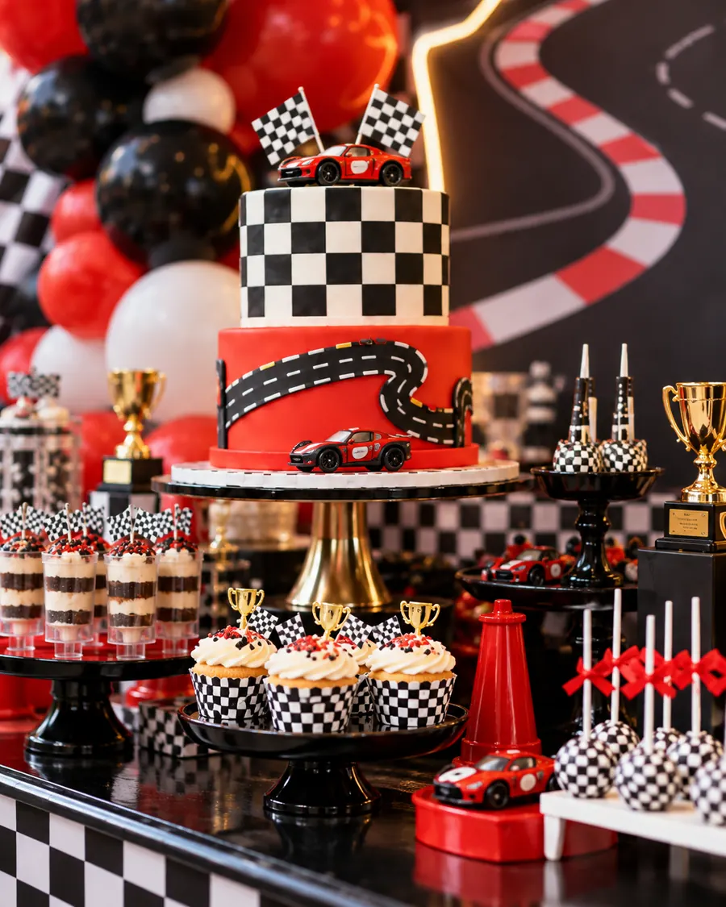
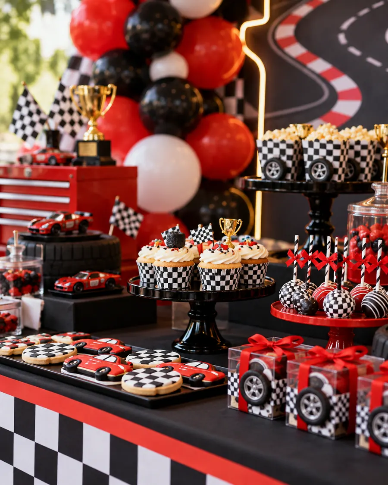

Línea de salida
Datos
de la carrera
Circuito
Kartódromo SurCalz. del Circuito 500, Tlalpan, CDMX
Salida
12:00 en puntoTerminamos a las 4:00
Equipo
Tenis cerradosCascos y overoles los ponemos nosotros
Paddock
Lo que te espera


El circuito
Plan de vueltas
- Registro de pilotos12:00 · Casco, overol y número
- Prácticas12:30 · Tres vueltas de reconocimiento
- La carrera1:30 · Con bandera y todo
- Podio y pastel3:00 · Medalla para cada piloto
Meta
¿Corres con nosotros?
Confirma para apartar su kart y su casco.
 Hecho por Savey
Hecho por Savey